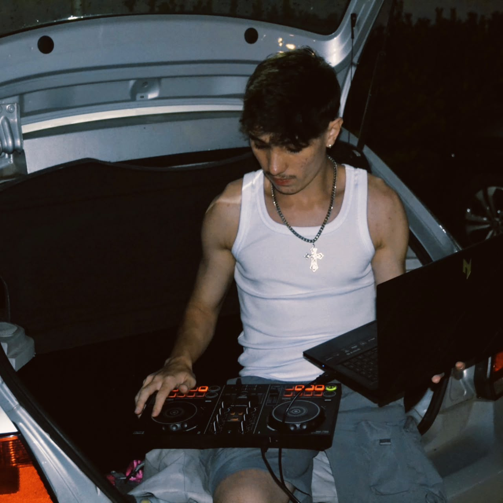
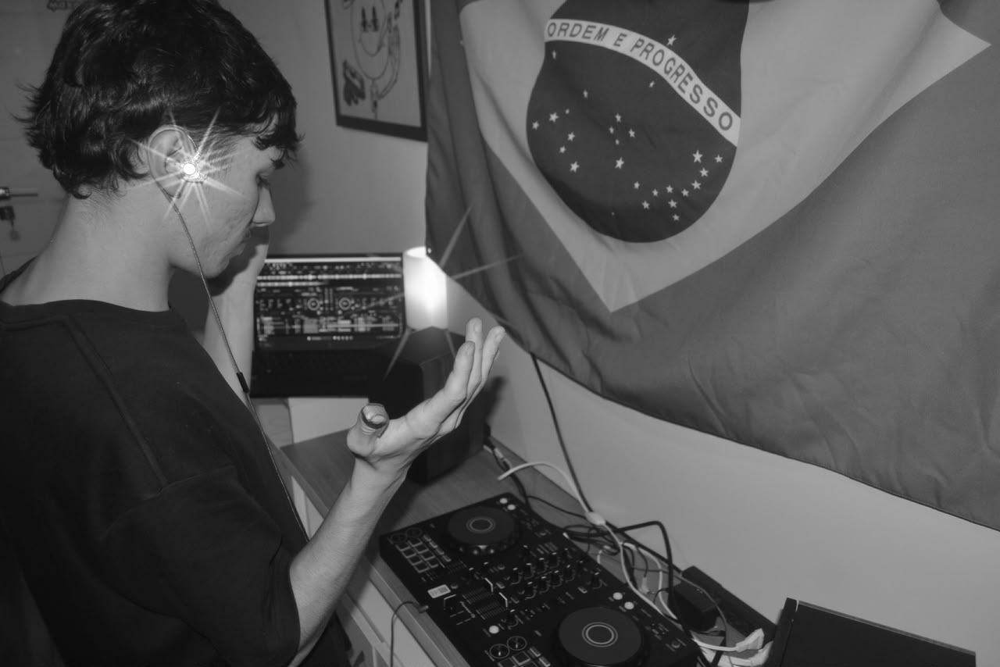

DJ + OPEN FORMATCURITIBA · PR
DJ / CURITIBA — PR
DJSIDDD
SCROLL PARA ENTRAR
NÃO É UM GÊNERO. É MOVIMENTO.
A PISTARESPONDE

DA PESQUISA PRA PISTA
SEM
CAIXA.
SEM
FÓRMULA.
SIDDD é DJ de Curitiba, no Paraná, e acredita que cada pista pede uma conversa diferente. Sets que atravessam gêneros, conectam referências e acompanham a energia de quem está ali.
SELEÇÃO COM INTENÇÃOLEITURA DE PISTA EM TEMPO REAL
O SOM
SE MOVE.
Trap, hip hop, pop, funk, R&B, eletrônica e brasilidades. Sem receita pronta: cada set encontra seu próprio caminho.
01 / TRAPTRAP
02 / TRAPTRAP
02 / HIP HOPHIP HOP
02 / TRAPTRAP
03 / POPPOP
02 / TRAPTRAP
04 / FUNKFUNK
04 / R&BR&B
05 / ELETRÔNICAELETRÔNICA
06 / BRASILIDADESBRASILIDADES
CADA NOITE
É OUTRA.
Do primeiro som ao último drop, o set acompanha a energia do lugar. Festa, evento, club ou encontro: a música encontra o momento.
TRAP / HIP HOP / POP / FUNK / R&BLEITURA DE PISTA ● ENERGIA ALTA
SEM POSE.
SÓ PRESENÇA.
RECORTES DE UMA VIDA
EM VOLTA DO SOM
CURITIBA · PR — DISPONÍVEL PARA FESTAS · EVENTOS · PROJETOS